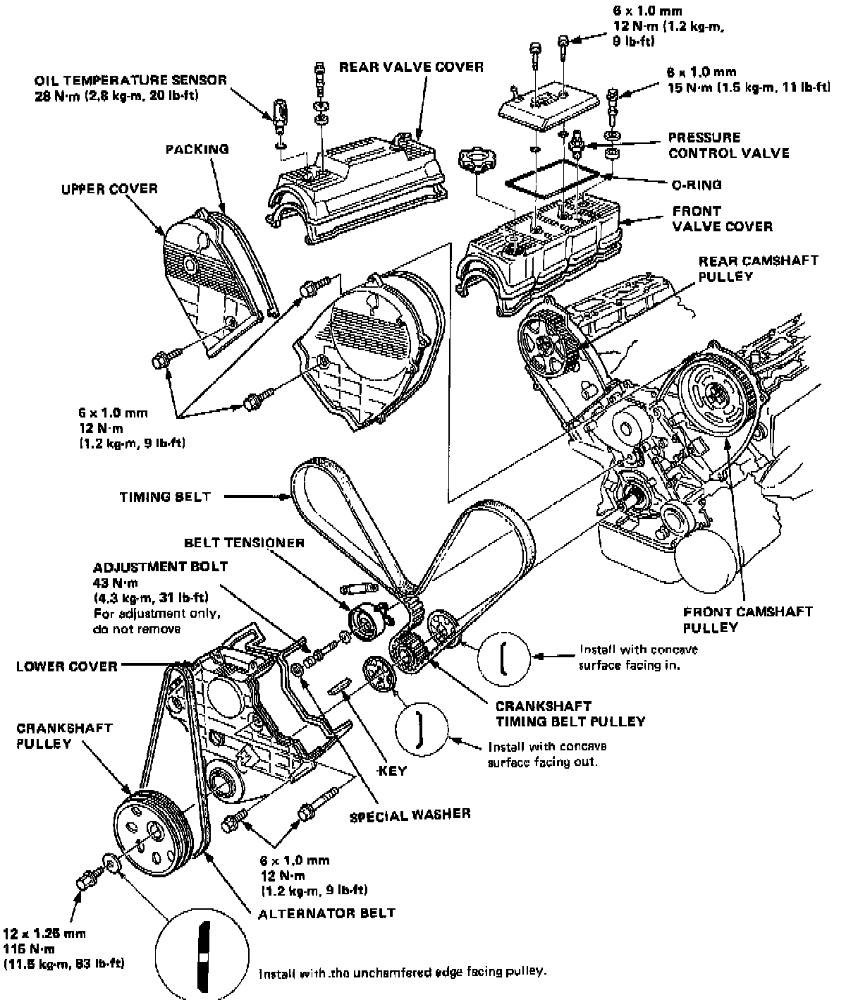
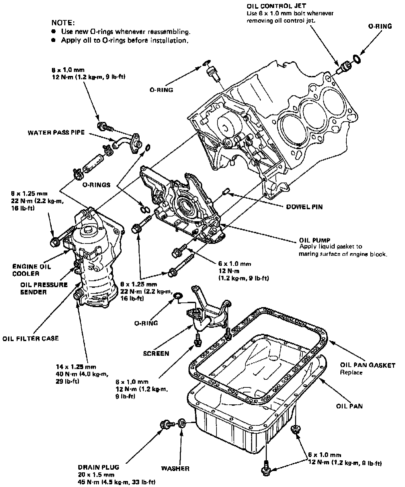
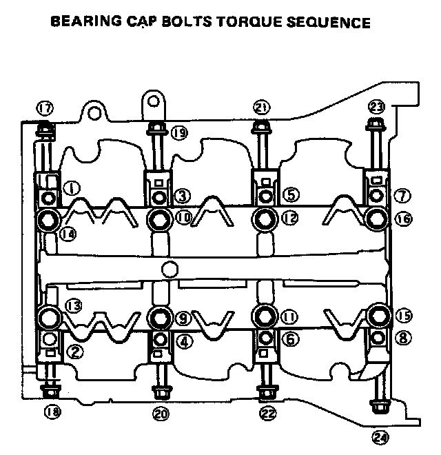

Operation CHARM
: Car repair manuals for everyone.
Home
>>
Acura
>>
1987
>>
Legend Coupe V6-2494cc 2.5L SOHC FI
>>
Repair and Diagnosis
>>
Specifications
>>
Mechanical Specifications
>>
Engine
>>
Cylinder Block Assembly
>>
System Specifications
System Specifications
Timing Components:

Lower Engine:
Engine Lubrication:

Main Bearing Cap Bolt Torque:

Flywheel Bolt Torque Sequence:
A/T Drive Plate Torque Sequence: